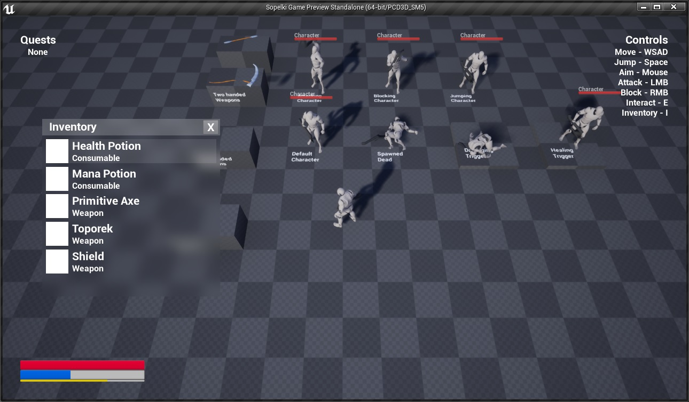

//
Portfolio
Welcome to the showcase of my current and past work! Here, you can find brief information about many of projects that I have created or contributed to. Please note that this site contains only work that I have created since 2013, as unfortunately I do not have many of my older projects archived.
//
Current Work
Employment
- Currently employed as Technical QA Analyst at CD Projekt Red and working on highly anticipated release of Cyberpunk 2077 title. I am supporting a team of gameplay and engine programmers at the studio in Warsaw.
- Websites: CD Projekt Red, Cyberpunk 2077
Engine Programming
- Currently working on a general purpose game engine written in C++. Utilizes OpenGL library for realtime graphics and Lua as a scripting language. Under heavy refactor as part of research towards developing most optimal structure/foundation for writing a reusable game engine.
- Repository: GitHub
//
Past Employment
Testronic
- Previously employed as Senior QA Technician at a game testing company Testronic, where I had the pleasure of working on many exciting projects developed by well known studios from all around the world. Throughout the period of two years at the company, I have made contributions towards following titles:
- PC Building Simulator (The Irregular Corporation)
- Dead Rising 4 (Capcom Vancouver)
- Friday the 13th: The Game (IllFonic)
- Rain World (Videocult)
- Rise & Shine (Super Awesome Hyper Dimensional Mega Team)
- Banner Saga 2 (Stoic Studio)
- Antihero (Versus Evil)
- BattleTech (Harebrained Schemes)
- Space Junkies (Ubisoft Montpellier)
- 7 Days to Die (The Fun Pimps)
- Kingdom Come: Deliverance (Warhorse Studios)
- Homefront 2 (Dambuster Studios)
- Conan Exiles (Funcom)
- Other smaller mobile or arcade titles...
- Website: Testronic
//
Graphics Programming
Raytracer
- Raytracer written in Rust as a learning experience to learn a new language and to refresh knowledge about fundamentals of graphics programming. Runs on CPU and is heavily optimized to utilize multithreading, static dispatch, cache locality, link time optimizations etc. Built on top of custom SIMD math library that also has a scalar version maintained for compatibility. Project contains large number of unit tests and benchmarks to verify correctness, as heavily promoted by Rust's ecosystem and its built-in tools. Each presented image is made of nearly 500 million samples processed in almost 4 seconds on Ryzen 3600.
- Notable features:
- Saving/loading scenes to JSON files
- Lambertian/diffuse, metalic/reflective and refractive materials
- Camera defocus and motion blur
- Multisampled antialiasing
- Repository: GitHub
//
Multiplayer Networking
Tanks Prototype
- Prototype of a multiplayer game with custom engine built from scratch on top of SFML. Engine includes performant multithreaded networking system that supports reliable/ordered packets while using UDP sockets. System is resilient to packet loss, delay and corruption. Engine allows game state to be serialized to memory and sent to clients when connecting to in-progress sessions.
- Repository: GitHub
//
Projects
Naughty Present
- Complete game created for Extra Credits Holiday 2018 Game Jam in Unity 5 over a single weekend in collaboration with few friends from the industry. It's a platformer where you have to control "a naughty present" using physical impulses with an objective to complete a level that is riddled with some creative obstacles. My contributions include:
- Implementing player controller in C#
- Implementing visual effects and particle system for snow
- Implementing interface, ending cinematic and credits
- Environment, lighting and finishing touches to levels
- Website: itch.io
- Video: YouTube
Towns
- Unfinished prototype for a strategy game focused on management, created in Unreal Engine 4. Despite experience with writing C++ for UE4, this project was exclusively implemented in Blueprints. My contributions include creating player controller, core gameplay elements, implementing AI for units and structures, visual effects (e.g. dynamic cloud shadows as seen on the screenshot).
Sopelki

- Unfinished prototype for a hack&slash game with top-down perspective, created in Unreal Engine 4. Many gameplay elements were functional and ready for alpha milestone. Game itself could be played in multiplayer with proper replication of all existing gameplay systems/mechanics. I was responsible for all gameplay coding which was done entirely in C++ (Blueprints were used only for content implementation) for the following:
- Player controller
- Player character animations
- Combat gameplay mechanics
- Inventory and equipping items
- Quest system with NPC dialogues
- Game interface and HUD
- Artificial intelligence
- Multiplayer replication
- Video: WebM
//
Gameplay Demos
Shooting Character in Unreal Engine 4

- Shooting character demo reimplemented in Unity Engine 4. Features top-down character locomotion with animation and some gameplay elements implemented such as different moving/aiming stances, shooting, items and health system. All character logic was written in C++, with few small systems built using Blueprints.
- Repository: GitHub
- Video: YouTube
Shooting Character in Unity 5

Character Locomotion in Unity 5

Controller Controller in Unity 5

- First and third person character controller demo. Uses a physically controlled rigid body that properly reacts to the environment. Character correctly moves and jumps on difficult terrain, bouncing and sliding as expected. Includes a simple AI for following and shooting at nearby targets. Scripts for this demo were written in C#.
- Repository: GitHub
- Video: GIF
//
Game Engine

- Side scrolling shooter game prototype that showcases a custom game engine written from scratch in C++ and utilizing OpenGL API for graphics.
- Notable features:
- Font loading and rendering using signed distance fields
- Cache system for storing expensive calculations between application's executions
- Very efficient 2D sprite rendering achieved with batching and instancing
- Scripting Lua engine where the entire logic of the game resides
- Entity/Component system for all game objects
- Elegant logging system using stream operators
- Quake like console with input and variables
- Repository: GitHub
- Video: GIF
//
Game Modding
Mod for XCOM 2: War of the Chosen

- Soundtrack Restoration mod for XCOM 2 War of the Chosen by Fireaxis running on Unreal Engine 3. Restores and reuses unused or otherwise removed soundtracks with the help of UnrealScript.
- Website: Steam Workshop
- Repository: GitHub
Mods for Civilization 5: Brave New World


- Collection of two mods called Quick Turns and Quick Diplomacy that greatly improve the speed of AI turn processing in Civilization V game by Fireaxis. Mods were created by writing Lua addons and modifying the game's source code that is written in C++. Both of these modifications have been downloaded by almost two hundred thousands of unique players.
- Website: Steam Workshop
- Repository: GitHub
//
Randomized Terrain

- Custom terrain generation and rendering engine written from scratch in C++ that utilizes Direct3D 11 API. Features random landscapes created with a single press of a button. Terrain's mesh is created from a height map generated using diamond-square algorithm. Detail textures are created by running a shader that turns its height map into a normal texture.

- Main feature implements geomipmapping that splits the entire terrain into small patches, each with a different resolution based on the distance from the viewer. Terrain patches are later carefully connected to each other in order to remove seams. This feature along with the frustum culling improves performance from 10 FPS to 150 FPS on 1024x1024 height map terrain. Rendering the entire terrain and all of its patches requires only a single draw call (using dynamic index buffer).

- Custom framework also features a day and night cycle with a sky dome rendered using an atmospheric scattering shader.
//
Environment Rendering

- Rendering framework demo written in C++ and utilizing Direct3D 11 API. Showcases Atrium Sponza Palace model improved and published by Crytek that was originally created by Frank Meinl.

- Scene features a point light casting shadows that heavily utilizes hardware instancing along with its cube shadow mapping for major performance improvements. Imported and rendered model contains multiple different textures and types of materials. Normal and specular maps were separately created for each imported diffuse texture. Shaders written in HLSL render these materials with normal and specular lighting.
//
Deferred Rendering
- Implementation of a deferred rendering technique that is now utilized by almost every game to some extent. Features a renderer written in C++ and utilizing Directx 3D API that handles a virtually unlimited number of light sources that otherwise cannot be drawn easily using traditional forward rendering techniques. Showcases a scene with a model of Stanford Bunny.

- Scene is first rendered to many different buffers containing information such as diffuse, normal, specular, emissive and motion values. Second pass involves combining these buffers and drawing blended lights. Scissor tests are used to improve performance by only drawing into the parts of the frame buffer that are affected by rendered light volumes.
//
HDR Rendering

- Rendering framework demo written in C++ and utilizing Direct3D 11 API. Presents High Dynamic Range (HDR) technique that renders a scene into a high precision frame buffer that is later mapped into a color range that can be displayed by a monitor. Allows special effects such as accurate bloom or eye adaptation to be applied.

- Scene presents a cube mapped sphere with Fresnel reflections. Demo utilizes a histogram that mimics an eye's adaptation to the brightness of environment. This demo was based on samples from NVIDIA SDK.
//
Text Rendering
- Custom rendering framework for loading fonts and drawing text strings, written in C++ and utilizing Direct3D 11 API. Font glyphs are first rendered to a bitmap and then drawn as sprites. Dedicated cache stores previously rendered glyphs for later use. Querying text metrics allows text to be transformed or wrapped inside an enclosed text area. More efficient and capable implementation that uses signed distance fields can be found on my GitHub page.
//
Steering Behaviors

//
Open Source
OpenXcom
- Wrote a small contribution for open source implementation of UFO: Enemy Unknown game from 1994 that improved usability of its save system.
- Repository: GitHub
//
Software
Music Player
- Music player written with Web technologies such as HTML/CSS/JavaScript that can be deployed as a native application for desktop platforms thanks to Node-Webkit.
- Repository: GitHub
//
Prototypes
2D Game Prototype


{kind=link}
{kind=link}
{kind=link}
{kind=link}
{kind=link}
{kind=link}
{kind=link}
{kind=link}
{kind=link}
{kind=link}
{kind=link}
{kind=link}
{kind=link}